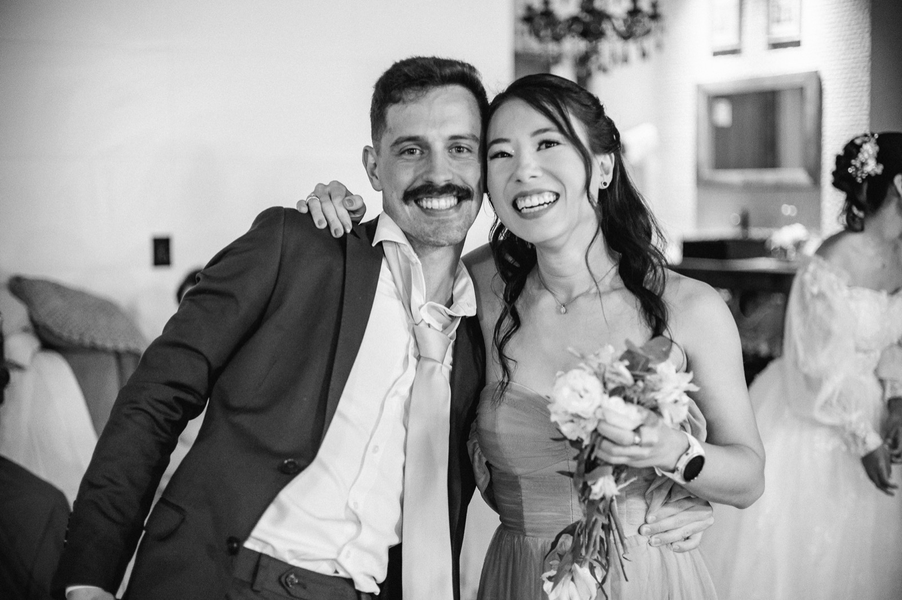

Início da cerimônia
Pedimos pontualidade para todos aproveitarem esse momento. A gente promete que vai ser legal!
Cronograma do casamento
Pedimos pontualidade para todos aproveitarem esse momento. A gente promete que vai ser legal!
Momento leve para abraços, boas conversas e comidinhas pra ninguém passar fome.
Um jantar especial para celebrar juntos com comida boa.
